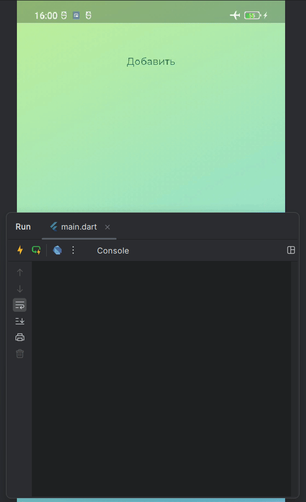

Stateful. Жизненный цикл
Схема жизненного цикла
В отличие от StatelessWidget, который неизменяем, StatefulWidget может изменять своё состояние в процессе работы. Это делает его более гибким, но также требует понимания жизненного цикла, чтобы правильно управлять ресурсами и обновлять интерфейс.
Жизненный цикл StatefulWidget можно представить как несколько последовательных этапов, которые вызываются в определённом порядке.

Основные методы жизненного цикла:
StatefulWidget→ прописали код виджетаConstructor→ вызвали конструкторcreateState()→ создаёт объект состоянияStateStateполучаетcontext→ Информация о местоположении виджета в деревеinitState()→ вызывается один раз когда создаётся объект (добавляется в дерево)didCnangeDependecies→ вызывается, когда изменяются зависимости виджетаbuild()→ строит (отрисовывает) виджетsetState()→ сообщает, что состояние изменилось, и необходимо перерисовать UIdidUpdateWidget()→ вызывается, если виджет обновился.deactivate()→ удаление из дерева, но есть возможность вернуть виджет в негоdispose()→ окончательное удаление виджета из дерева
Подробное описание работы жизненного цикла виджета
-
Когда
BuildContextназначается виджету, он считается "смонтированным" (mounted). Это означает, что уState-объекта устанавливается флагmounted = true, и фреймворк знает, что виджет присутствует в дереве.- Этот флаг можно использовать, чтобы проверить, можно ли обновлять состояние (например, перед вызовом
setState()).
- Этот флаг можно использовать, чтобы проверить, можно ли обновлять состояние (например, перед вызовом
-
Вызывается
initState(). Это первый метод, вызываемый при созданииState. Здесь можно инициализировать ресурсы, подписаться наStream, создатьAnimationControllerи т. д.- Аналогии:
onCreate()в Android,viewDidLoad()в iOS. - Важно:
initState()вызывается только один раз за время жизниState.
- Аналогии:
-
Вызывается
didChangeDependencies().- Этот метод вызывается сразу после
initState(), еслиState- объект зависит отInheritedWidget. - Если изменяется
InheritedWidget, от которого зависитState,didChangeDependencies()сработает снова. - Важно: Метод может вызываться несколько раз за время жизни
State.
- Этот метод вызывается сразу после
-
Вызывается
build(). Это главный метод отрисовки UI. Он вызывается каждый раз, когда фреймворк считает, что виджет требует обновления.- Каждый виджет в дереве рекурсивно вызывает
build(), поэтому этот метод должен работать максимально быстро. - Нельзя делать в
build():- Тяжелые вычисления (их нужно выполнять асинхронно и сохранять результат в
State). - Запросы в сеть (иначе UI зависнет).
- Тяжелые вычисления (их нужно выполнять асинхронно и сохранять результат в
- Каждый виджет в дереве рекурсивно вызывает
-
Вызывается
didUpdateWidget(), если родительский виджет изменился.- Если
StatefulWidgetпересоздан, ноStateостался тем же, вызываетсяdidUpdateWidget(). - В этот момент передается
oldWidget, чтобы можно было сравнить старые и новые свойства. - Используется, например, для перезапуска анимации, если изменился параметр анимации.
- Если
-
Когда вызывается
setState(), виджет помечается как "грязный" (dirty).- Это сигнал фреймворку, что виджет требует перерисовки.
- После этого
build()будет вызван снова.
-
Если виджет удаляется из дерева, вызывается
deactivate().- Но объект
Stateможет быть повторно использован в другом месте дерева. - Пример: при использовании
Navigator.push()иNavigator.pop()виджет может временно исчезнуть и снова появиться.
- Но объект
-
Когда виджет окончательно удаляется, вызывается
dispose().- Этот метод используется для освобождения ресурсов:
- Отмена подписок на
Stream. - Очистка контроллеров (
AnimationController,TextEditingController). - Остановка таймеров и других асинхронных операций.
- Отмена подписок на
- После
dispose()объектStateуничтожается, аmountedстановитсяfalse.
- Этот метод используется для освобождения ресурсов:
Практический пример
Важно!
- Внутри
StatefulWidgetнет доступа доContextи доState - Внутри
Stateесть доступ доContextи доState - Внутри
Stateнет прямого доступа к свойствамStatefulWidget - Для доступа к свойствам
StatefulWidgetиспользуется ключевое словоwidget
Файл widgets/lifecycle_example.dart


import 'package:flutter/material.dart';
class ListOfSomeWidget extends StatefulWidget {
@override
State<ListOfSomeWidget> createState() => _MyAppState();
}
class _MyAppState extends State<ListOfSomeWidget> {
// Так сделано для примера, чтобы посмотреть
// на методы жизненного цикла при добавлении удалении и обновлении виджета List<Widget> listOfWidget = [];
int index = 0;
void deleteItem() => setState(() => listOfWidget.removeLast());
void insertItem() => setState(() => listOfWidget.add(LifeCycleExample()));
void updateItem() {
index = (index + 1) % 5; // цикличная последовательность от 0 до 4
setState(() {
listOfWidget.last = LifeCycleExample(colorIndex: index);
});
}
@override
Widget build(BuildContext context) {
return Column(
children: [
Row(
mainAxisAlignment: MainAxisAlignment.center,
children: [
TextButton(onPressed: insertItem, child: Text('Добавить')),
if (listOfWidget.isNotEmpty) ...[
TextButton(onPressed: deleteItem, child: Text('Удалить')),
TextButton(onPressed: updateItem, child: Text('Обновить')),
],
],
),
...listOfWidget,
],
);
}
}
class LifeCycleExample extends StatefulWidget {
final int colorIndex;
final colors = [
Color(0xFFFFD448),
Color(0xFFFD7777),
Color(0xFFFF80DE),
Color(0xFFFFF4F4),
Color(0xFFD1FF48),
];
LifeCycleExample({this.colorIndex = 0}) {
debugPrint('🔵constructor -> ExampleLifeCycle()');
}
@override
_LifeCycleExampleState createState() {
debugPrint('🔵createState()');
return _LifeCycleExampleState();
}
}
class _LifeCycleExampleState extends State<LifeCycleExample> {
late String title;
_LifeCycleExampleState() {
debugPrint('🔵constructor -> _ExampleLifeCycleState');
}
void changeTitle() {
setState(() {
debugPrint('🔵widget#${'{'}identityHashCode(widget){'}'} setState()');
title = 'Жизненный цикл + State';
});
}
@override
void initState() {
debugPrint('🔵initState()');
title = 'Жизненный цикл';
super.initState();
}
@override
void didChangeDependencies() {
debugPrint('🔵widget#${'{'}identityHashCode(widget){'}'} didChangeDependencies()');
super.didChangeDependencies();
}
@override
void didUpdateWidget(covariant LifeCycleExample oldWidget) {
debugPrint('🔵didUpdateWidget()');
debugPrint(''
'❌ oldWidget = ${'{'}identityHashCode(oldWidget){'}'}\n'
'✅ newWidget = ${'{'}identityHashCode(widget){'}'}');
super.didUpdateWidget(oldWidget);
}
@override
void deactivate() {
debugPrint('🔵widget#${'{'}identityHashCode(widget){'}'} deactivate()');
super.deactivate();
}
@override
void dispose() {
debugPrint('🔵widget#${'{'}identityHashCode(widget){'}'} dispose()');
super.dispose();
}
@override
Widget build(BuildContext context) {
debugPrint('🔵widget#${'{'}identityHashCode(widget){'}'} build()');
return GestureDetector(
onTap: changeTitle,
child: ColoredBox(
color: widget.colors[widget.colorIndex],
child: Padding(
padding: const EdgeInsets.all(8.0),
child: Text(title),
),
),
);
}
}
Как работает жизненный цикл виджета

Добавление виджета
Нажатие "Добавить" вызывает insertItem(). Новый LifeCycleExample добавляется в listOfWidget. Flutter вызывает:
- 🔵
constructor→ExampleLifeCycle() - 🔵
createState() - 🔵
constructor→_ExampleLifeCycleState - 🔵
initState() - 🔵
widget#450469716→didChangeDependencies() - 🔵
widget#450469716→build()
Изменение внутреннего состояния виджета
Нажатие на текст Жизненный цикл вызывает:
- 🔵
widget#450469716→setState() - 🔵
widget#450469716→build() - Текст меняется на
Жизненный цикл + State
Обновление виджета
Нажатие "Обновить" вызывает updateItem(), меняя colorIndex. Flutter вызывает:
- 🔵
constructor→ExampleLifeCycle() - 🔵
didUpdateWidget()(старый и новыйLifeCycleExampleсравниваются) - ❌
oldWidget=450469716 - ✅
newWidget=801791187 - 🔵
widget#801791187→build()(отрисовка с новым цветом)
Важно: Виджет не пересоздается полностью, а обновляется. Element и State сохраняются (надпись «Жизненный цикл + State» не исчезает).
Удаление виджета
Нажатие "Удалить" вызывает deleteItem(). Последний LifeCycleExample удаляется. Flutter вызывает:
- 🔵
widget#801791187→deactivate() - 🔵
widget#801791187→dispose()